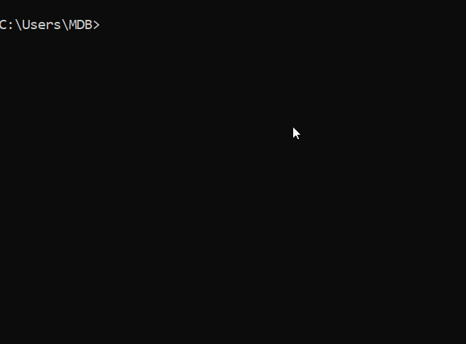
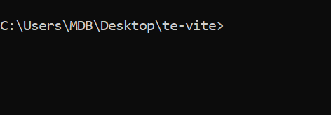
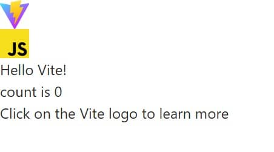
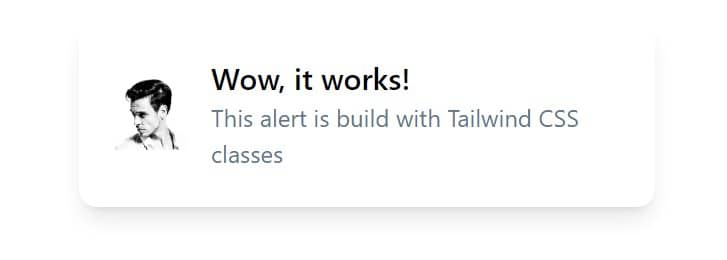
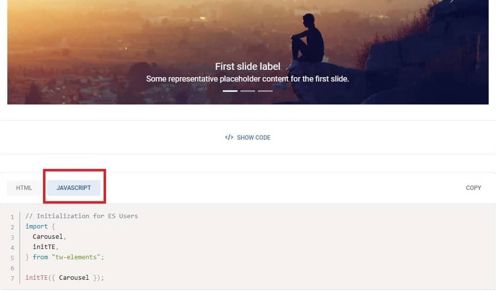

Wow, it works!
This alert is build with Tailwind CSS classes
Although the CDN method is quick and easy, it has many limitations:
That's why we need a tool that will provide us with all these things. That tool is Vite.
Vite is a modern, lightning-fast build tool and development server for web applications, created by Evan You, the creator of Vue.js.
Leveraging the power of native ES modules, Vite offers an exceptional development experience with features like instantaneous hot module replacement (HMR), efficient production builds, and out-of-the-box support for various frameworks and libraries.
Its greatness lies in its ability to significantly speed up the development process, reduce configuration overhead, and provide a smooth, responsive workflow. By enhancing productivity and improving developer experience, Vite has become one of the most popular choice for building modern web applications.
But enough of this theory. Let's check in practice what is really so great about Vite.
Skip this step if you already have Node.js installed.
To run Vite on your computer you need Node.js.
To install it go to the https://nodejs.org/ and click the button to download it.
You will see 2 buttons there - LTS on the left, and Current on the right. It does not really matter what version do you chose, but just to simply not to overthink it choose the version on the right ("Current").

Once downloaded, run the file, accept the terms and just click "Next" until the installation is complete.

After the installation is complete, you can see the terminal window as in the screenshot below. Click any button to proceed.

Now let's check if the installation was successful. Launch the terminal (if you are using Windows, type "cmd" in the system search and run Command Line app / on MacOS, search for the "terminal" application).
Then type node -v in the terminal and click enter. You should
see the version of the installed node.js software like on the screen below
(note your version may be different as an update may have come out since
this tutorial was published).

To begin with, we need to create a new folder and a new Vite project to put in that folder.
Open terminal, navigate to the path where you want to put your project and type the following command:
Then select the Vanilla framework (meaning pure JavaScript) and
the JavaScript variant.
At the end type cd te-vite in the terminal to go to the folder
with our new project.
Below is a screenshot from my terminal. As you can see, I first went to my desktop and then followed the steps listed above.
Note: If you feel insecure in the terminal, don't worry. I wrote a short tutorial on basic commands. Read it and the terminal will no longer be a problem for you.
Terminal basicsNow copy and paste the following commands into the terminal:
npm install -D tailwindcss postcss autoprefixer will install
Tailwind and all the necessary dependencies
npx tailwindcss init -p will create
tailwind.config.cjs file.
Now open the entire te-vite folder with code editor and go to
the
te-vite/tailwind.config.js
file. Then update it so it looks like this:
This way we define where our files are to be stored.
style.css file
Next, we need to add the necessary Tailwind directives to our
style.css file to be able to use Tailwind classes on your
website.
You will find style.css in the root of our project.
Delete all the code you find there and replace it with the following:
index.html
Go to the index.html file and just above closing
</head> tag add link to the style.css file:
Let's see if we set up everything correctly. In the terminal type the command:
After entering the above command, Vite should start a local server on your computer and give you an address where you can see your application.
As you can see above, in my case it is the following address:
When you go to the given link, you should see your application, which to be honest looks a bit broken:

Let's fix it. Go to index.html file and remove
the following line:
Replace it with the following code:
This alert is build with Tailwind CSS classes
If you see a panel like this after saving the file in your browser, then the Tailwind classes are working as they should, so everything has been installed correctly.
Now that Tailwind CSS has been successfully installed, it's time to install TW Elements.
Open a terminal and press ctrl + c (or
command + c on macOS) to abort the current
process. (sometimes you have to click 2 times for it to be interrupted).
Then enter the following command to install TW Elements:
Now we need to change Tailwind config file. Go to
tailwind.config.js and update is as follows:
We've almost got it all! Now let's check if TW Elements works as it should.
Restart Vite by typing this command again:
Now go to the carousel documentation and copy HTML code of the basic example:
Next, paste the code of the carousel to the index.html and
replace with it the panel that we added in step 7 to check if Tailwind
classes work properly:
After saving the file you should see a carousel:
The problem is it doesn't work properly. When you click the arrow the slides don't change.
What happened?
Do you remember how in the previous lesson, where we used the CDN method, I mentioned that in addition to the HTML code in the example, there is also JavaScript code that initializes this component?
In the CDN method, we didn't have to initialize the components and everything worked with just HTML. However, when using Vite this additional initialization is necessary.
This may sound like one extra unnecessary step, but don't be fooled. Thanks to this initialization, we can indicate which exact components we want to import, thanks to which our project will contain only the code it needs.
This is of great importance for optimization and performance.
So let's initialize the carousel component in our project.
Go to the main.js file (you will find it in the root folder of
your project) and remove the entire code from this file.
Next go back to the carousel documentation, click "JavaScript" tab and copy JavaScript code
Then paste it to the main.js file.
After saving the file you should see a working carousel. After clicking on the arrows, the slides should change, which means that both the Tailwind Elements styles and the necessary JavaScript work correctly.
Huh, that was a long lesson 😮 Well done you!
Remember that if something doesn't work as it should or is not clear to you, you can always hit me up on Twitter 😉
.jpg)
.jpg)
.jpg)